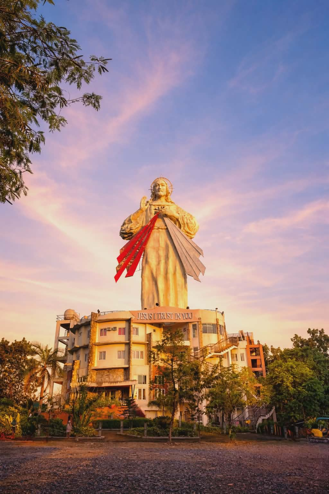

"A PICTURE IS WORTH A THOUSAND WORDS"
Hey, I'm Sebastian, a college student at Bulacan State University, Meneses Campus, taking up BSIT. I've recently discovered photography as a new hobby. I'm also an aspiring Web Developer. I'm still a newbie in both photography and web development, but I'm excited to explore and learn more. As long as I love what I'm doing, I'm confident I'll get through the challenges

